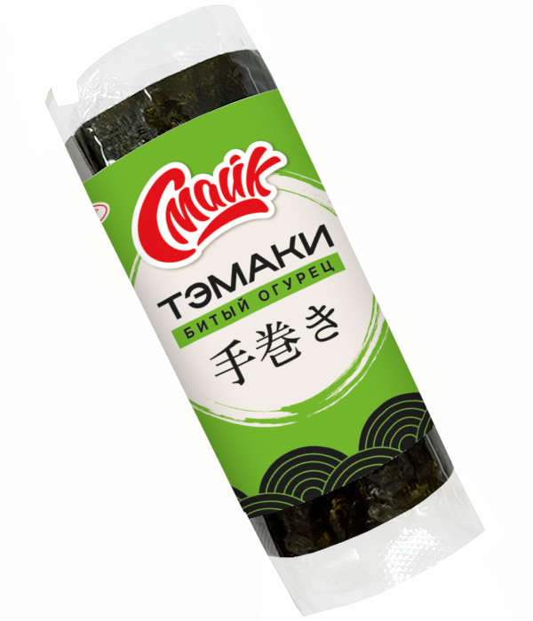

Тэмаки битый огурец

Состав: рис, битый огурец, творожный сыр, колбасный сыр, крабовое мясо, нори.
Масса нетто: 120 г.
Пищевая и энергетическая ценность в 100 г продукта (средние значения):
Белки – 3 г.
Жиры – 4 г.
Углеводы – 28 г.
Калорийность – 160 ккал / 670 кДж.